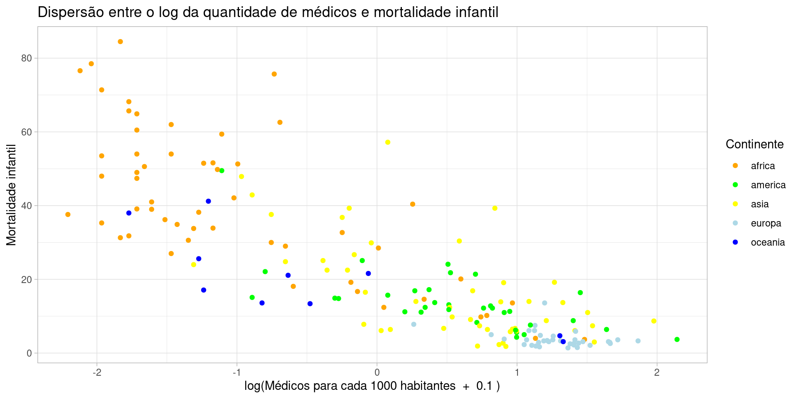
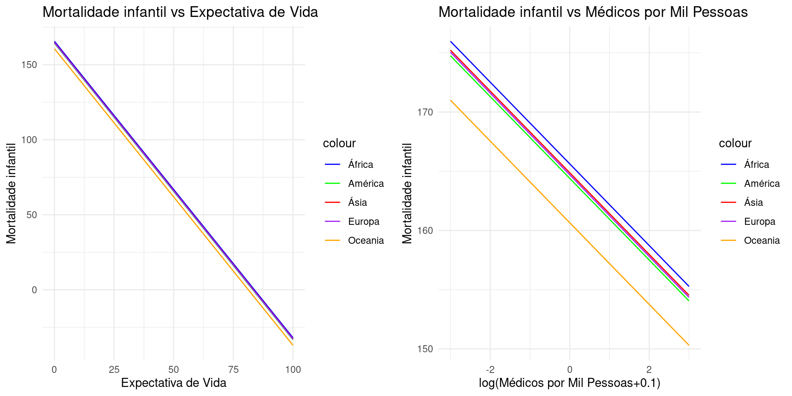
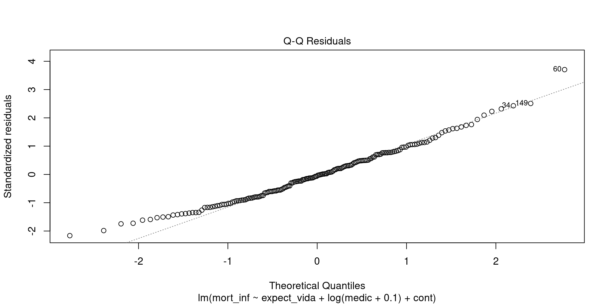

| Estatística | Valor |
|---|---|
| Média | 21.625 |
| Desvio padrão | 19.888 |
| Minimo | 1.400 |
| Q1 | 6.000 |
| Mediana | 13.900 |
| Q3 | 33.900 |
| Máximo | 84.500 |
Este trabalho tem como objetivo analisar os fatores que influenciam a mortalidade infantil (variável resposta) em diferentes países, utilizando um modelo de regressão múltipla, a partir das variáveis Expectativa de vida, médicos para cada mil pessoas e continente do país (variáveis explicativas).
O banco de dados que vamos analisar é
Global Country Information Dataset 2023
disponivel em https://www.kaggle.com/datasets/nelgiriyewithana/countries-of-the-world-2023/data
Foi removido países onde as variáveis utilizadas continha NA’s
| Estatística | Valor |
|---|---|
| Média | 21.625 |
| Desvio padrão | 19.888 |
| Minimo | 1.400 |
| Q1 | 6.000 |
| Mediana | 13.900 |
| Q3 | 33.900 |
| Máximo | 84.500 |
| Estatística | Valor |
|---|---|
| Média | 72.208 |
| Desvio padrão | 7.511 |
| Minimo | 52.800 |
| Q1 | 66.700 |
| Mediana | 73.400 |
| Q3 | 77.600 |
| Máximo | 84.200 |
| Estatística | Valor |
|---|---|
| Média | 21.625 |
| Desvio padrão | 19.888 |
| Minimo | 1.400 |
| Q1 | 6.000 |
| Mediana | 13.900 |
| Q3 | 33.900 |
| Máximo | 84.500 |
| Mortalidade Infantil | Expectativa de Vida | Médicos | |
|---|---|---|---|
| Mortalidade Infantil | 1.000 | -0.933 | -0.696 |
| Expectativa de Vida | -0.933 | 1.000 | 0.700 |
| Médicos | -0.696 | 0.700 | 1.000 |
| Mortalidade Infantil | Expectativa de Vida | Médicos | |
|---|---|---|---|
| Mortalidade Infantil | 395.528 | -139.306 | -22.516 |
| Expectativa de Vida | -139.306 | 56.409 | 8.570 |
| Médicos | -22.516 | 8.570 | 2.697 |
Vamos analisar os diagramas de dispersão entre as variáveis qualitativas que estamos interessados em analisar
Mortalidade infantil vs expectativa de vida
Mortalidade infantil vs quantidade de médicos para cada 1000 pessoas
Além disso, vamos analisar os boxplots da mortalidade infantil para cada continente
Há um problema: uma relação não linear …
… para resolver, vamos fazer uma transformação
\[ \begin{aligned} \text{Mortalidade infantil} = \beta_0 &\\ &\quad + \beta_1 \cdot \text{Expectativa de vida} \\ &\quad + \beta_2 \cdot \log(\text{Médicos por mil pessoas}+0.1) \\ &\quad + \beta_{3,j} I_{\text{Continente}_j}\\ &\quad + \epsilon \end{aligned} \]
\[ \begin{aligned} Y &:= \text{Mortalidade infantil} \\ X_1 &:= \text{Expectativa de vida} \\ X_2 &:= \log(\text{Médicos para cada 1000 habitantes}+0.1) \\ X_3 &:= \text{Continente} \end{aligned} \]
\[ Y = \beta_0 + \beta_1 \cdot X_1 + \beta_2 \cdot X_2 + \beta_{3,j} I_{continente_j} \]
Call:
lm(formula = mort_inf ~ expect_vida + log(medic + 0.1) + cont,
data = wor)
Coefficients:
(Intercept) expect_vida log(medic + 0.1) contamerica
165.6259 -1.9765 -3.4498 -1.2235
contasia conteuropa contoceania
-0.7514 -0.9235 -4.9725 \[ \begin{aligned} \beta_0 &= 165.6259 \\ \beta_1 &= -1.9765\\ \beta_2 &= -3.4497\\ X_{3,0} = \text{África} \Rightarrow \beta_{3,0} &= 0\\ X_{3,1} = \text{Ásia} \Rightarrow \beta_{3,1} &= -0.7514\\ X_{3,2} = \text{América} \Rightarrow \beta_{3,2} &= -1.2235\\ X_{3,3} = \text{Europa} \Rightarrow \beta_{3,3} &= -0.9235\\ X_{3,4} = \text{Oceania} \Rightarrow \beta_{3,4} &= -4.9725 \end{aligned} \]
\[ \begin{aligned} \hat{Y} = 165.6259 - 1.9765 \cdot X_1 - 3.4498 \cdot X_2 \\ + \quad \begin{cases} -1.2235 & \text{se } \text{Continente } = \text{América} \\ -0.7514 & \text{se } \text{Continente } = \text{Ásia} \\ -0.9235 & \text{se } \text{Continente } = \text{Europa} \\ -4.9725 & \text{se } \text{Continente } = \text{Oceania} \\ 0 & \text{se } \text{Continente } = \text{África} \end{cases} \end{aligned} \]
$$
separada por continente e separada pelas variáveis quantitativas

Call:
lm(formula = mort_inf ~ expect_vida + log(medic + 0.1) + cont,
data = wor)
Residuals:
Min 1Q Median 3Q Max
-14.8057 -5.3314 -0.3174 4.7588 25.2128
Coefficients:
Estimate Std. Error t value Pr(>|t|)
(Intercept) 165.6259 9.3559 17.703 < 2e-16 ***
expect_vida -1.9765 0.1340 -14.749 < 2e-16 ***
log(medic + 0.1) -3.4498 0.9061 -3.807 0.000196 ***
contamerica -1.2235 1.9222 -0.636 0.525303
contasia -0.7514 1.7589 -0.427 0.669763
conteuropa -0.9235 2.2451 -0.411 0.681328
contoceania -4.9725 2.4990 -1.990 0.048204 *
---
Signif. codes: 0 '***' 0.001 '**' 0.01 '*' 0.05 '.' 0.1 ' ' 1
Residual standard error: 6.919 on 171 degrees of freedom
(1 observation deleted due to missingness)
Multiple R-squared: 0.8807, Adjusted R-squared: 0.8765
F-statistic: 210.4 on 6 and 171 DF, p-value: < 2.2e-16
Shapiro-Wilk normality test
data: mod$residuals
W = 0.9839, p-value = 0.03813\[ H_0 : resíduos \sim normal \\ H_1 : resíduos \nsim normal \]
Em um nível de 10% de significância, não há evidencias para rejeitar a hipótese nula, isto é, podemos dizer que os resíduos seguem uma distribuição normal
Pelo gráfico abaixo, podemos ver que o resíduo se aproxima de uma normal

studentized Breusch-Pagan test
data: mod
BP = 30.708, df = 6, p-value = 2.881e-05Podemos perceber que o pressuposto da homocedasticidade não foi atendido, pois o p-valor é muito baixo
Min. 1st Qu. Median Mean 3rd Qu. Max.
-2.163453 -0.794164 -0.047800 0.001015 0.699533 3.705340 ***(Austrália, Nova Zelândia e Paquistão)
Vamos verificar se a heterocedasticidade é dada pelos outliers
studentized Breusch-Pagan test
data: mod
BP = 30.708, df = 6, p-value = 2.881e-05O p-valor continua muito próximo de 0, portanto, não são os outliers que estão atrapalhando a homocedasticidade dos resíduos
GVIF Df GVIF^(1/(2*Df))
expect_vida 3.685555 1 1.919780
log(medic + 0.1) 4.030801 1 2.007685
cont 2.563368 4 1.124868Existe multicolinearidade se o valor for maior que 10, neste caso, não há multicolinearidade
Gustavo Ubatuba Farias - 00577844